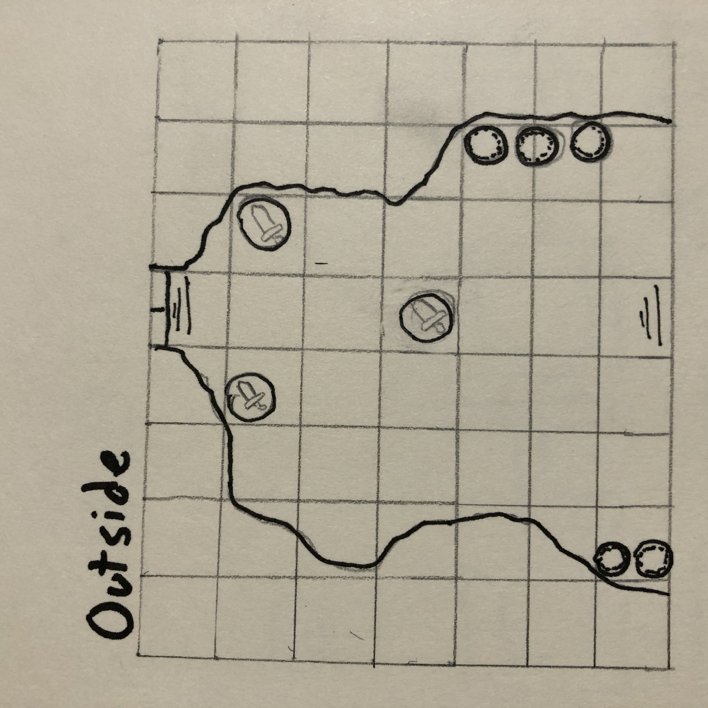
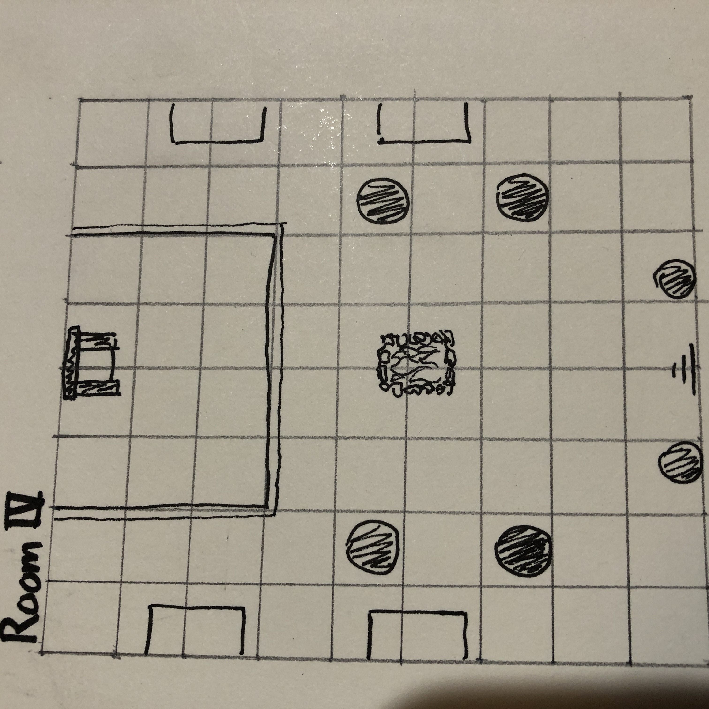

The Lord of Silurum is a DnD one shot intended for four level one characters. It is set in the city of Silurum, a town on the coast of a land that has been ravaged by a trio of volcanoes hundreds of years ago and remains an ashy wasteland to this day. Your group of adventurers has taken a job to investigate the murder of the guard captain at the request of the town's leader, Baron Os'Eserev.
This adventure is designed to only require one boss combat encounter, all others can be avoided by outthinking your opponents or persuading them not to fight.
Two of the rough maps for the adventure:
 